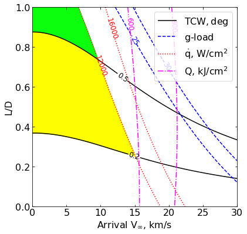
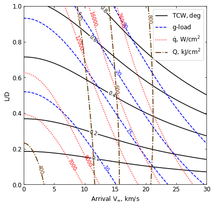

06 - a - Jupiter - Feasibility Charts - Lift¶
[1]:
from AMAT.planet import Planet
from AMAT.vehicle import Vehicle
import numpy as np
from scipy import interpolate
import matplotlib.pyplot as plt
from matplotlib import rcParams
from matplotlib.patches import Polygon
import os
[2]:
# Set up the planet and atmosphere model.
planet=Planet("JUPITER")
planet.h_skip = 1000e3
planet.h_low = 50e3
planet.loadAtmosphereModel('../atmdata/Jupiter/jupiter-galileo-asi.dat', 0 , 1 , 2, 3, heightInKmFlag=True)
[6]:
vinf_kms_array = np.linspace( 0.0, 30.0, 11)
LD_array = np.linspace( 0.0, 1.0 , 11)
[4]:
os.makedirs('../data/jsr-paper/jupiter/')
[4]:
runID = 'jupiter-lift-'
num_total = len(vinf_kms_array)*len(LD_array)
count = 1
v0_kms_array = np.zeros(len(vinf_kms_array))
v0_kms_array[:] = np.sqrt(1.0*(vinf_kms_array[:]*1E3)**2.0 +\
2*np.ones(len(vinf_kms_array))*\
planet.GM/(planet.RP+1000.0*1.0E3))/1.0E3
overShootLimit_array = np.zeros((len(v0_kms_array),len(LD_array)))
underShootLimit_array = np.zeros((len(v0_kms_array),len(LD_array)))
exitflag_os_array = np.zeros((len(v0_kms_array),len(LD_array)))
exitflag_us_array = np.zeros((len(v0_kms_array),len(LD_array)))
TCW_array = np.zeros((len(v0_kms_array),len(LD_array)))
[5]:
for i in range(0,len(v0_kms_array)):
for j in range(0,len(LD_array)):
vehicle=Vehicle('Apollo', 1000.0, 200.0, LD_array[j], 3.1416, 0.0, 1.00, planet)
vehicle.setInitialState(1000.0,0.0,0.0,v0_kms_array[i],0.0,-4.5,0.0,0.0)
vehicle.setSolverParams(1E-5)
overShootLimit_array[i,j], exitflag_os_array[i,j] = vehicle.findOverShootLimit (2400.0, 1.0, -30.0, -4.0, 1E-10, 430.0e3)
underShootLimit_array[i,j], exitflag_us_array[i,j] = vehicle.findUnderShootLimit(2400.0, 1.0, -30.0, -4.0, 1E-10, 430.0e3)
TCW_array[i,j] = overShootLimit_array[i,j] - underShootLimit_array[i,j]
print("Run #"+str(count)+" of "+ str(num_total)+": Arrival V_infty: "+str(vinf_kms_array[i])+" km/s"+", L/D:"+str(LD_array[j]) + " OSL: "+str(overShootLimit_array[i,j])+" USL: "+str(underShootLimit_array[i,j])+", TCW: "+str(TCW_array[i,j])+" EFOS: "+str(exitflag_os_array[i,j])+ " EFUS: "+str(exitflag_us_array[i,j]))
count = count +1
np.savetxt('../data/jsr-paper/jupiter/'+runID+'vinf_kms_array.txt',vinf_kms_array)
np.savetxt('../data/jsr-paper/jupiter/'+runID+'v0_kms_array.txt',v0_kms_array)
np.savetxt('../data/jsr-paper/jupiter/'+runID+'LD_array.txt',LD_array)
np.savetxt('../data/jsr-paper/jupiter/'+runID+'overShootLimit_array.txt',overShootLimit_array)
np.savetxt('../data/jsr-paper/jupiter/'+runID+'exitflag_os_array.txt',exitflag_os_array)
np.savetxt('../data/jsr-paper/jupiter/'+runID+'undershootLimit_array.txt',underShootLimit_array)
np.savetxt('../data/jsr-paper/jupiter/'+runID+'exitflag_us_array.txt',exitflag_us_array)
np.savetxt('../data/jsr-paper/jupiter/'+runID+'TCW_array.txt',TCW_array)
Run #1 of 121: Arrival V_infty: 0.0 km/s, L/D:0.0 OSL: -8.250083343256847 USL: -8.250083343256847, TCW: 0.0 EFOS: 1.0 EFUS: 1.0
Run #2 of 121: Arrival V_infty: 0.0 km/s, L/D:0.1 OSL: -8.224272770792595 USL: -8.278023182108882, TCW: 0.05375041131628677 EFOS: 1.0 EFUS: 1.0
Run #3 of 121: Arrival V_infty: 0.0 km/s, L/D:0.2 OSL: -8.200576778501272 USL: -8.308307312334364, TCW: 0.10773053383309161 EFOS: 1.0 EFUS: 1.0
Run #4 of 121: Arrival V_infty: 0.0 km/s, L/D:0.30000000000000004 OSL: -8.178688754262112 USL: -8.340840042365016, TCW: 0.1621512881029048 EFOS: 1.0 EFUS: 1.0
Run #5 of 121: Arrival V_infty: 0.0 km/s, L/D:0.4 OSL: -8.158474835647212 USL: -8.376168460803456, TCW: 0.2176936251562438 EFOS: 1.0 EFUS: 1.0
Run #6 of 121: Arrival V_infty: 0.0 km/s, L/D:0.5 OSL: -8.139820103067905 USL: -8.413846390518302, TCW: 0.2740262874503969 EFOS: 1.0 EFUS: 1.0
Run #7 of 121: Arrival V_infty: 0.0 km/s, L/D:0.6000000000000001 OSL: -8.122652362559165 USL: -8.454718283377588, TCW: 0.33206592081842246 EFOS: 1.0 EFUS: 1.0
Run #8 of 121: Arrival V_infty: 0.0 km/s, L/D:0.7000000000000001 OSL: -8.106693200126756 USL: -8.497750904680288, TCW: 0.39105770455353195 EFOS: 1.0 EFUS: 1.0
Run #9 of 121: Arrival V_infty: 0.0 km/s, L/D:0.8 OSL: -8.091901883388346 USL: -8.544259075111768, TCW: 0.45235719172342215 EFOS: 1.0 EFUS: 1.0
Run #10 of 121: Arrival V_infty: 0.0 km/s, L/D:0.9 OSL: -8.078232851272332 USL: -8.59372589601844, TCW: 0.5154930447461084 EFOS: 1.0 EFUS: 1.0
Run #11 of 121: Arrival V_infty: 0.0 km/s, L/D:1.0 OSL: -8.065453317445645 USL: -8.644608058340964, TCW: 0.5791547408953193 EFOS: 1.0 EFUS: 1.0
Run #12 of 121: Arrival V_infty: 3.0 km/s, L/D:0.0 OSL: -8.255386544275098 USL: -8.255386544275098, TCW: 0.0 EFOS: 1.0 EFUS: 1.0
Run #13 of 121: Arrival V_infty: 3.0 km/s, L/D:0.1 OSL: -8.229102372075431 USL: -8.283883401425555, TCW: 0.0547810293501243 EFOS: 1.0 EFUS: 1.0
Run #14 of 121: Arrival V_infty: 3.0 km/s, L/D:0.2 OSL: -8.205003574403236 USL: -8.314685551828006, TCW: 0.1096819774247706 EFOS: 1.0 EFUS: 1.0
Run #15 of 121: Arrival V_infty: 3.0 km/s, L/D:0.30000000000000004 OSL: -8.182793054162175 USL: -8.348156393840327, TCW: 0.16536333967815153 EFOS: 1.0 EFUS: 1.0
Run #16 of 121: Arrival V_infty: 3.0 km/s, L/D:0.4 OSL: -8.162333339372708 USL: -8.384083221288165, TCW: 0.22174988191545708 EFOS: 1.0 EFUS: 1.0
Run #17 of 121: Arrival V_infty: 3.0 km/s, L/D:0.5 OSL: -8.14347357317456 USL: -8.422952008688299, TCW: 0.2794784355137381 EFOS: 1.0 EFUS: 1.0
Run #18 of 121: Arrival V_infty: 3.0 km/s, L/D:0.6000000000000001 OSL: -8.126118987362133 USL: -8.464658935154148, TCW: 0.3385399477920146 EFOS: 1.0 EFUS: 1.0
Run #19 of 121: Arrival V_infty: 3.0 km/s, L/D:0.7000000000000001 OSL: -8.11004034234793 USL: -8.508997062643175, TCW: 0.39895672029524576 EFOS: 1.0 EFUS: 1.0
Run #20 of 121: Arrival V_infty: 3.0 km/s, L/D:0.8 OSL: -8.095146052415657 USL: -8.556708074611379, TCW: 0.4615620221957215 EFOS: 1.0 EFUS: 1.0
Run #21 of 121: Arrival V_infty: 3.0 km/s, L/D:0.9 OSL: -8.081374427441915 USL: -8.607527919506538, TCW: 0.5261534920646227 EFOS: 1.0 EFUS: 1.0
Run #22 of 121: Arrival V_infty: 3.0 km/s, L/D:1.0 OSL: -8.068526719900547 USL: -8.659626188782568, TCW: 0.591099468882021 EFOS: 1.0 EFUS: 1.0
Run #23 of 121: Arrival V_infty: 6.0 km/s, L/D:0.0 OSL: -8.270944740768755 USL: -8.270944740768755, TCW: 0.0 EFOS: 1.0 EFUS: 1.0
Run #24 of 121: Arrival V_infty: 6.0 km/s, L/D:0.1 OSL: -8.243293473846279 USL: -8.30105487813853, TCW: 0.05776140429225052 EFOS: 1.0 EFUS: 1.0
Run #25 of 121: Arrival V_infty: 6.0 km/s, L/D:0.2 OSL: -8.217878716466657 USL: -8.333839059443562, TCW: 0.11596034297690494 EFOS: 1.0 EFUS: 1.0
Run #26 of 121: Arrival V_infty: 6.0 km/s, L/D:0.30000000000000004 OSL: -8.19485349428578 USL: -8.369531430049392, TCW: 0.17467793576361146 EFOS: 1.0 EFUS: 1.0
Run #27 of 121: Arrival V_infty: 6.0 km/s, L/D:0.4 OSL: -8.173560433046077 USL: -8.408138516017061, TCW: 0.23457808297098381 EFOS: 1.0 EFUS: 1.0
Run #28 of 121: Arrival V_infty: 6.0 km/s, L/D:0.5 OSL: -8.154128978982044 USL: -8.449841770881903, TCW: 0.29571279189985944 EFOS: 1.0 EFUS: 1.0
Run #29 of 121: Arrival V_infty: 6.0 km/s, L/D:0.6000000000000001 OSL: -8.136242893619055 USL: -8.49428219980473, TCW: 0.3580393061856739 EFOS: 1.0 EFUS: 1.0
Run #30 of 121: Arrival V_infty: 6.0 km/s, L/D:0.7000000000000001 OSL: -8.119835077188327 USL: -8.542541896727926, TCW: 0.42270681953959865 EFOS: 1.0 EFUS: 1.0
Run #31 of 121: Arrival V_infty: 6.0 km/s, L/D:0.8 OSL: -8.10462816353538 USL: -8.594128103701223, TCW: 0.4894999401658424 EFOS: 1.0 EFUS: 1.0
Run #32 of 121: Arrival V_infty: 6.0 km/s, L/D:0.9 OSL: -8.09065132579417 USL: -8.648737514435197, TCW: 0.5580861886410275 EFOS: 1.0 EFUS: 1.0
Run #33 of 121: Arrival V_infty: 6.0 km/s, L/D:1.0 OSL: -8.077574719653057 USL: -8.706117956993694, TCW: 0.6285432373406366 EFOS: 1.0 EFUS: 1.0
Run #34 of 121: Arrival V_infty: 9.0 km/s, L/D:0.0 OSL: -8.29569134801568 USL: -8.29569134801568, TCW: 0.0 EFOS: 1.0 EFUS: 1.0
Run #35 of 121: Arrival V_infty: 9.0 km/s, L/D:0.1 OSL: -8.265765531315992 USL: -8.328524867836677, TCW: 0.06275933652068488 EFOS: 1.0 EFUS: 1.0
Run #36 of 121: Arrival V_infty: 9.0 km/s, L/D:0.2 OSL: -8.238450494965946 USL: -8.364532841856999, TCW: 0.12608234689105302 EFOS: 1.0 EFUS: 1.0
Run #37 of 121: Arrival V_infty: 9.0 km/s, L/D:0.30000000000000004 OSL: -8.213841686309024 USL: -8.40395882386656, TCW: 0.1901171375575359 EFOS: 1.0 EFUS: 1.0
Run #38 of 121: Arrival V_infty: 9.0 km/s, L/D:0.4 OSL: -8.191427120509616 USL: -8.446644399657089, TCW: 0.25521727914747316 EFOS: 1.0 EFUS: 1.0
Run #39 of 121: Arrival V_infty: 9.0 km/s, L/D:0.5 OSL: -8.170995713568118 USL: -8.49324209720362, TCW: 0.32224638363550184 EFOS: 1.0 EFUS: 1.0
Run #40 of 121: Arrival V_infty: 9.0 km/s, L/D:0.6000000000000001 OSL: -8.152272514998913 USL: -8.543509204922884, TCW: 0.3912366899239714 EFOS: 1.0 EFUS: 1.0
Run #41 of 121: Arrival V_infty: 9.0 km/s, L/D:0.7000000000000001 OSL: -8.135343700683734 USL: -8.597639156323567, TCW: 0.46229545563983265 EFOS: 1.0 EFUS: 1.0
Run #42 of 121: Arrival V_infty: 9.0 km/s, L/D:0.8 OSL: -8.119690008890757 USL: -8.654922527755843, TCW: 0.5352325188650866 EFOS: 1.0 EFUS: 1.0
Run #43 of 121: Arrival V_infty: 9.0 km/s, L/D:0.9 OSL: -8.105355537234573 USL: -8.716443505058123, TCW: 0.6110879678235506 EFOS: 1.0 EFUS: 1.0
Run #44 of 121: Arrival V_infty: 9.0 km/s, L/D:1.0 OSL: -8.092113284066727 USL: -8.782364839462389, TCW: 0.6902515553956619 EFOS: 1.0 EFUS: 1.0
Run #45 of 121: Arrival V_infty: 12.0 km/s, L/D:0.0 OSL: -8.3280312681527 USL: -8.3280312681527, TCW: 0.0 EFOS: 1.0 EFUS: 1.0
Run #46 of 121: Arrival V_infty: 12.0 km/s, L/D:0.1 OSL: -8.295054528367473 USL: -8.36476720628707, TCW: 0.0697126779195969 EFOS: 1.0 EFUS: 1.0
Run #47 of 121: Arrival V_infty: 12.0 km/s, L/D:0.2 OSL: -8.265291897529096 USL: -8.405360432414454, TCW: 0.14006853488535853 EFOS: 1.0 EFUS: 1.0
Run #48 of 121: Arrival V_infty: 12.0 km/s, L/D:0.30000000000000004 OSL: -8.238473775112652 USL: -8.450149320931814, TCW: 0.21167554581916193 EFOS: 1.0 EFUS: 1.0
Run #49 of 121: Arrival V_infty: 12.0 km/s, L/D:0.4 OSL: -8.214549593627453 USL: -8.498934569273842, TCW: 0.28438497564638965 EFOS: 1.0 EFUS: 1.0
Run #50 of 121: Arrival V_infty: 12.0 km/s, L/D:0.5 OSL: -8.19292408304318 USL: -8.55280902616505, TCW: 0.3598849431218696 EFOS: 1.0 EFUS: 1.0
Run #51 of 121: Arrival V_infty: 12.0 km/s, L/D:0.6000000000000001 OSL: -8.17341506320372 USL: -8.610517048327893, TCW: 0.43710198512417264 EFOS: 1.0 EFUS: 1.0
Run #52 of 121: Arrival V_infty: 12.0 km/s, L/D:0.7000000000000001 OSL: -8.1557137711643 USL: -8.672940570271749, TCW: 0.5172267991074477 EFOS: 1.0 EFUS: 1.0
Run #53 of 121: Arrival V_infty: 12.0 km/s, L/D:0.8 OSL: -8.139564784112736 USL: -8.74031101977016, TCW: 0.6007462356574251 EFOS: 1.0 EFUS: 1.0
Run #54 of 121: Arrival V_infty: 12.0 km/s, L/D:0.9 OSL: -8.124872956061154 USL: -8.812406536570052, TCW: 0.687533580508898 EFOS: 1.0 EFUS: 1.0
Run #55 of 121: Arrival V_infty: 12.0 km/s, L/D:1.0 OSL: -8.111372288280108 USL: -8.889959052066843, TCW: 0.7785867637867341 EFOS: 1.0 EFUS: 1.0
Run #56 of 121: Arrival V_infty: 15.0 km/s, L/D:0.0 OSL: -8.366648175891896 USL: -8.366648175891896, TCW: 0.0 EFOS: 1.0 EFUS: 1.0
Run #57 of 121: Arrival V_infty: 15.0 km/s, L/D:0.1 OSL: -8.329697186287376 USL: -8.408140138002636, TCW: 0.07844295171526028 EFOS: 1.0 EFUS: 1.0
Run #58 of 121: Arrival V_infty: 15.0 km/s, L/D:0.2 OSL: -8.296866517426679 USL: -8.454514168202877, TCW: 0.15764765077619813 EFOS: 1.0 EFUS: 1.0
Run #59 of 121: Arrival V_infty: 15.0 km/s, L/D:0.30000000000000004 OSL: -8.267673100235697 USL: -8.505978471628623, TCW: 0.23830537139292574 EFOS: 1.0 EFUS: 1.0
Run #60 of 121: Arrival V_infty: 15.0 km/s, L/D:0.4 OSL: -8.241837993016816 USL: -8.563327188327094, TCW: 0.32148919531027786 EFOS: 1.0 EFUS: 1.0
Run #61 of 121: Arrival V_infty: 15.0 km/s, L/D:0.5 OSL: -8.218944311141968 USL: -8.62544543977856, TCW: 0.4065011286365916 EFOS: 1.0 EFUS: 1.0
Run #62 of 121: Arrival V_infty: 15.0 km/s, L/D:0.6000000000000001 OSL: -8.198455374127661 USL: -8.694075916020665, TCW: 0.495620541893004 EFOS: 1.0 EFUS: 1.0
Run #63 of 121: Arrival V_infty: 15.0 km/s, L/D:0.7000000000000001 OSL: -8.180022807129717 USL: -8.768379155335424, TCW: 0.588356348205707 EFOS: 1.0 EFUS: 1.0
Run #64 of 121: Arrival V_infty: 15.0 km/s, L/D:0.8 OSL: -8.163397348289436 USL: -8.84859619614872, TCW: 0.685198847859283 EFOS: 1.0 EFUS: 1.0
Run #65 of 121: Arrival V_infty: 15.0 km/s, L/D:0.9 OSL: -8.14831908056658 USL: -8.936166219318693, TCW: 0.7878471387521131 EFOS: 1.0 EFUS: 1.0
Run #66 of 121: Arrival V_infty: 15.0 km/s, L/D:1.0 OSL: -8.134533755735902 USL: -9.0291149831246, TCW: 0.8945812273886986 EFOS: 1.0 EFUS: 1.0
Run #67 of 121: Arrival V_infty: 18.0 km/s, L/D:0.0 OSL: -8.409701583732385 USL: -8.409701583732385, TCW: 0.0 EFOS: 1.0 EFUS: 1.0
Run #68 of 121: Arrival V_infty: 18.0 km/s, L/D:0.1 OSL: -8.368156737211393 USL: -8.456849273527041, TCW: 0.08869253631564789 EFOS: 1.0 EFUS: 1.0
Run #69 of 121: Arrival V_infty: 18.0 km/s, L/D:0.2 OSL: -8.33186944163026 USL: -8.510363077271904, TCW: 0.17849363564164378 EFOS: 1.0 EFUS: 1.0
Run #70 of 121: Arrival V_infty: 18.0 km/s, L/D:0.30000000000000004 OSL: -8.300111854136048 USL: -8.570420397321868, TCW: 0.27030854318581987 EFOS: 1.0 EFUS: 1.0
Run #71 of 121: Arrival V_infty: 18.0 km/s, L/D:0.4 OSL: -8.272215471406525 USL: -8.63701650742587, TCW: 0.3648010360193439 EFOS: 1.0 EFUS: 1.0
Run #72 of 121: Arrival V_infty: 18.0 km/s, L/D:0.5 OSL: -8.24795499805623 USL: -8.711607044293487, TCW: 0.4636520462372573 EFOS: 1.0 EFUS: 1.0
Run #73 of 121: Arrival V_infty: 18.0 km/s, L/D:0.6000000000000001 OSL: -8.226546466066793 USL: -8.793647457576299, TCW: 0.5671009915095055 EFOS: 1.0 EFUS: 1.0
Run #74 of 121: Arrival V_infty: 18.0 km/s, L/D:0.7000000000000001 OSL: -8.207518824739964 USL: -8.883172544861736, TCW: 0.6756537201217725 EFOS: 1.0 EFUS: 1.0
Run #75 of 121: Arrival V_infty: 18.0 km/s, L/D:0.8 OSL: -8.190391560376156 USL: -8.98143664336385, TCW: 0.7910450829876936 EFOS: 1.0 EFUS: 1.0
Run #76 of 121: Arrival V_infty: 18.0 km/s, L/D:0.9 OSL: -8.175013594402117 USL: -9.087084903367213, TCW: 0.9120713089650963 EFOS: 1.0 EFUS: 1.0
Run #77 of 121: Arrival V_infty: 18.0 km/s, L/D:1.0 OSL: -8.161006995476782 USL: -9.201288672855299, TCW: 1.0402816773785162 EFOS: 1.0 EFUS: 1.0
Run #78 of 121: Arrival V_infty: 21.0 km/s, L/D:0.0 OSL: -8.455662537300668 USL: -8.455662537300668, TCW: 0.0 EFOS: 1.0 EFUS: 1.0
Run #79 of 121: Arrival V_infty: 21.0 km/s, L/D:0.1 OSL: -8.409107391336875 USL: -8.50944706347218, TCW: 0.10033967213530559 EFOS: 1.0 EFUS: 1.0
Run #80 of 121: Arrival V_infty: 21.0 km/s, L/D:0.2 OSL: -8.368954850498994 USL: -8.571214044379303, TCW: 0.20225919388030889 EFOS: 1.0 EFUS: 1.0
Run #81 of 121: Arrival V_infty: 21.0 km/s, L/D:0.30000000000000004 OSL: -8.334427594942099 USL: -8.641674503051036, TCW: 0.3072469081089366 EFOS: 1.0 EFUS: 1.0
Run #82 of 121: Arrival V_infty: 21.0 km/s, L/D:0.4 OSL: -8.304669233686582 USL: -8.720272716185718, TCW: 0.4156034824991366 EFOS: 1.0 EFUS: 1.0
Run #83 of 121: Arrival V_infty: 21.0 km/s, L/D:0.5 OSL: -8.27912356302113 USL: -8.809715044277254, TCW: 0.5305914812561241 EFOS: 1.0 EFUS: 1.0
Run #84 of 121: Arrival V_infty: 21.0 km/s, L/D:0.6000000000000001 OSL: -8.25686650944408 USL: -8.908772281713027, TCW: 0.6519057722689467 EFOS: 1.0 EFUS: 1.0
Run #85 of 121: Arrival V_infty: 21.0 km/s, L/D:0.7000000000000001 OSL: -8.23726191343303 USL: -9.018486355686036, TCW: 0.7812244422530057 EFOS: 1.0 EFUS: 1.0
Run #86 of 121: Arrival V_infty: 21.0 km/s, L/D:0.8 OSL: -8.219902030061348 USL: -9.137729546579067, TCW: 0.9178275165177183 EFOS: 1.0 EFUS: 1.0
Run #87 of 121: Arrival V_infty: 21.0 km/s, L/D:0.9 OSL: -8.204195070116839 USL: -9.267689783366222, TCW: 1.0634947132493835 EFOS: 1.0 EFUS: 1.0
Run #88 of 121: Arrival V_infty: 21.0 km/s, L/D:1.0 OSL: -8.19002866257506 USL: -9.408053433078749, TCW: 1.218024770503689 EFOS: 1.0 EFUS: 1.0
Run #89 of 121: Arrival V_infty: 24.0 km/s, L/D:0.0 OSL: -8.503221475351893 USL: -8.503221475351893, TCW: 0.0 EFOS: 1.0 EFUS: 1.0
Run #90 of 121: Arrival V_infty: 24.0 km/s, L/D:0.1 OSL: -8.451266806281637 USL: -8.564189181626716, TCW: 0.11292237534507876 EFOS: 1.0 EFUS: 1.0
Run #91 of 121: Arrival V_infty: 24.0 km/s, L/D:0.2 OSL: -8.407241546548903 USL: -8.635650133743184, TCW: 0.2284085871942807 EFOS: 1.0 EFUS: 1.0
Run #92 of 121: Arrival V_infty: 24.0 km/s, L/D:0.30000000000000004 OSL: -8.370022758972482 USL: -8.717896062567888, TCW: 0.34787330359540647 EFOS: 1.0 EFUS: 1.0
Run #93 of 121: Arrival V_infty: 24.0 km/s, L/D:0.4 OSL: -8.338409002950357 USL: -8.812324618826096, TCW: 0.4739156158757396 EFOS: 1.0 EFUS: 1.0
Run #94 of 121: Arrival V_infty: 24.0 km/s, L/D:0.5 OSL: -8.311677066063567 USL: -8.919488180072221, TCW: 0.6078111140086548 EFOS: 1.0 EFUS: 1.0
Run #95 of 121: Arrival V_infty: 24.0 km/s, L/D:0.6000000000000001 OSL: -8.288698779782862 USL: -9.039820672944188, TCW: 0.7511218931613257 EFOS: 1.0 EFUS: 1.0
Run #96 of 121: Arrival V_infty: 24.0 km/s, L/D:0.7000000000000001 OSL: -8.268579938958283 USL: -9.173316740008886, TCW: 0.9047368010506034 EFOS: 1.0 EFUS: 1.0
Run #97 of 121: Arrival V_infty: 24.0 km/s, L/D:0.8 OSL: -8.251027622340189 USL: -9.319941298781487, TCW: 1.0689136764412979 EFOS: 1.0 EFUS: 1.0
Run #98 of 121: Arrival V_infty: 24.0 km/s, L/D:0.9 OSL: -8.235136163239076 USL: -9.479642935591983, TCW: 1.2445067723529064 EFOS: 1.0 EFUS: 1.0
Run #99 of 121: Arrival V_infty: 24.0 km/s, L/D:1.0 OSL: -8.220873843645677 USL: -9.65208055088442, TCW: 1.4312067072387435 EFOS: 1.0 EFUS: 1.0
Run #100 of 121: Arrival V_infty: 27.0 km/s, L/D:0.0 OSL: -8.55135935574799 USL: -8.55135935574799, TCW: 0.0 EFOS: 1.0 EFUS: 1.0
Run #101 of 121: Arrival V_infty: 27.0 km/s, L/D:0.1 OSL: -8.4936682023108 USL: -8.620492698406451, TCW: 0.12682449609565083 EFOS: 1.0 EFUS: 1.0
Run #102 of 121: Arrival V_infty: 27.0 km/s, L/D:0.2 OSL: -8.445743934898928 USL: -8.702612521163246, TCW: 0.25686858626431786 EFOS: 1.0 EFUS: 1.0
Run #103 of 121: Arrival V_infty: 27.0 km/s, L/D:0.30000000000000004 OSL: -8.405889333458617 USL: -8.799347696221957, TCW: 0.3934583627633401 EFOS: 1.0 EFUS: 1.0
Run #104 of 121: Arrival V_infty: 27.0 km/s, L/D:0.4 OSL: -8.372680775726622 USL: -8.91198932901898, TCW: 0.5393085532923578 EFOS: 1.0 EFUS: 1.0
Run #105 of 121: Arrival V_infty: 27.0 km/s, L/D:0.5 OSL: -8.34495007237274 USL: -9.04085531198507, TCW: 0.6959052396123298 EFOS: 1.0 EFUS: 1.0
Run #106 of 121: Arrival V_infty: 27.0 km/s, L/D:0.6000000000000001 OSL: -8.321395591134205 USL: -9.186529687431175, TCW: 0.8651340962969698 EFOS: 1.0 EFUS: 1.0
Run #107 of 121: Arrival V_infty: 27.0 km/s, L/D:0.7000000000000001 OSL: -8.300960183049028 USL: -9.348987574601779, TCW: 1.0480273915527505 EFOS: 1.0 EFUS: 1.0
Run #108 of 121: Arrival V_infty: 27.0 km/s, L/D:0.8 OSL: -8.28314246312948 USL: -9.528902320169436, TCW: 1.2457598570399568 EFOS: 1.0 EFUS: 1.0
Run #109 of 121: Arrival V_infty: 27.0 km/s, L/D:0.9 OSL: -8.267162528820336 USL: -9.723678112342895, TCW: 1.4565155835225596 EFOS: 1.0 EFUS: 1.0
Run #110 of 121: Arrival V_infty: 27.0 km/s, L/D:1.0 OSL: -8.25284635207936 USL: -9.935327411280014, TCW: 1.6824810592006543 EFOS: 1.0 EFUS: 1.0
Run #111 of 121: Arrival V_infty: 30.0 km/s, L/D:0.0 OSL: -8.599246204270457 USL: -8.599246204270457, TCW: 0.0 EFOS: 1.0 EFUS: 1.0
Run #112 of 121: Arrival V_infty: 30.0 km/s, L/D:0.1 OSL: -8.535567919658206 USL: -8.677285177436715, TCW: 0.14171725777850952 EFOS: 1.0 EFUS: 1.0
Run #113 of 121: Arrival V_infty: 30.0 km/s, L/D:0.2 OSL: -8.483794711784867 USL: -8.771834930390469, TCW: 0.2880402186056017 EFOS: 1.0 EFUS: 1.0
Run #114 of 121: Arrival V_infty: 30.0 km/s, L/D:0.30000000000000004 OSL: -8.441580701910425 USL: -8.885201376499026, TCW: 0.4436206745886011 EFOS: 1.0 EFUS: 1.0
Run #115 of 121: Arrival V_infty: 30.0 km/s, L/D:0.4 OSL: -8.407111298685777 USL: -9.019149668238242, TCW: 0.6120383695524652 EFOS: 1.0 EFUS: 1.0
Run #116 of 121: Arrival V_infty: 30.0 km/s, L/D:0.5 OSL: -8.378377137611096 USL: -9.173707886635384, TCW: 0.7953307490242878 EFOS: 1.0 EFUS: 1.0
Run #117 of 121: Arrival V_infty: 30.0 km/s, L/D:0.6000000000000001 OSL: -8.35435494016565 USL: -9.349420569364156, TCW: 0.9950656291985069 EFOS: 1.0 EFUS: 1.0
Run #118 of 121: Arrival V_infty: 30.0 km/s, L/D:0.7000000000000001 OSL: -8.333632989808393 USL: -9.546438679790299, TCW: 1.2128056899819057 EFOS: 1.0 EFUS: 1.0
Run #119 of 121: Arrival V_infty: 30.0 km/s, L/D:0.8 OSL: -8.315710944378225 USL: -9.763996230023622, TCW: 1.4482852856453974 EFOS: 1.0 EFUS: 1.0
Run #120 of 121: Arrival V_infty: 30.0 km/s, L/D:0.9 OSL: -8.29962804094248 USL: -10.000122070501675, TCW: 1.700494029559195 EFOS: 1.0 EFUS: 1.0
Run #121 of 121: Arrival V_infty: 30.0 km/s, L/D:1.0 OSL: -8.285239609322161 USL: -10.25484653532476, TCW: 1.969606926002598 EFOS: 1.0 EFUS: 1.0
[7]:
acc_net_g_max_array = np.zeros((len(v0_kms_array),len(LD_array)))
stag_pres_atm_max_array = np.zeros((len(v0_kms_array),len(LD_array)))
q_stag_total_max_array = np.zeros((len(v0_kms_array),len(LD_array)))
heatload_max_array = np.zeros((len(v0_kms_array),len(LD_array)))
for i in range(0,len(v0_kms_array)):
for j in range(0,len(LD_array)):
vehicle=Vehicle('Apollo', 1000.0, 200.0, LD_array[j], 3.1416, 0.0, 1.00, planet)
vehicle.setInitialState(1000.0,0.0,0.0,v0_kms_array[i],0.0,overShootLimit_array[i,j],0.0,0.0)
vehicle.setSolverParams(1E-5)
vehicle.propogateEntry (2400.0, 1.0, 180.0)
# Extract and save variables to plot
t_min_os = vehicle.t_minc
h_km_os = vehicle.h_kmc
acc_net_g_os = vehicle.acc_net_g
q_stag_con_os = vehicle.q_stag_con
q_stag_rad_os = vehicle.q_stag_rad
rc_os = vehicle.rc
vc_os = vehicle.vc
stag_pres_atm_os = vehicle.computeStagPres(rc_os,vc_os)/(1.01325E5)
heatload_os = vehicle.heatload
vehicle=Vehicle('Apollo', 1000.0, 200.0, LD_array[j], 3.1416, 0.0, 1.00, planet)
vehicle.setInitialState(1000.0,0.0,0.0,v0_kms_array[i],0.0,underShootLimit_array[i,j],0.0,0.0)
vehicle.setSolverParams(1E-5)
vehicle.propogateEntry (2400.0, 1.0, 0.0)
# Extract and save variable to plot
t_min_us = vehicle.t_minc
h_km_us = vehicle.h_kmc
acc_net_g_us = vehicle.acc_net_g
q_stag_con_us = vehicle.q_stag_con
q_stag_rad_us = vehicle.q_stag_rad
rc_us = vehicle.rc
vc_us = vehicle.vc
stag_pres_atm_us = vehicle.computeStagPres(rc_us,vc_us)/(1.01325E5)
heatload_us = vehicle.heatload
q_stag_total_os = q_stag_con_os + q_stag_rad_os
q_stag_total_us = q_stag_con_us + q_stag_rad_us
acc_net_g_max_array[i,j] = max(max(acc_net_g_os),max(acc_net_g_us))
stag_pres_atm_max_array[i,j] = max(max(stag_pres_atm_os),max(stag_pres_atm_os))
q_stag_total_max_array[i,j] = max(max(q_stag_total_os),max(q_stag_total_us))
heatload_max_array[i,j] = max(max(heatload_os),max(heatload_os))
print("V_infty: "+str(vinf_kms_array[i])+" km/s"+", L/D: "+str(LD_array[j])+" G_MAX: "+str(acc_net_g_max_array[i,j])+" QDOT_MAX: "+str(q_stag_total_max_array[i,j])+" J_MAX: "+str(heatload_max_array[i,j])+" STAG. PRES: "+str(stag_pres_atm_max_array[i,j]))
np.savetxt('../data/jsr-paper/jupiter/'+runID+'acc_net_g_max_array.txt',acc_net_g_max_array)
np.savetxt('../data/jsr-paper/jupiter/'+runID+'stag_pres_atm_max_array.txt',stag_pres_atm_max_array)
np.savetxt('../data/jsr-paper/jupiter/'+runID+'q_stag_total_max_array.txt',q_stag_total_max_array)
np.savetxt('../data/jsr-paper/jupiter/'+runID+'heatload_max_array.txt',heatload_max_array)
V_infty: 0.0 km/s, L/D: 0.0 G_MAX: 6.60833313158494 QDOT_MAX: 5595.037845296978 J_MAX: 391576.2268816193 STAG. PRES: 0.12796043643559096
V_infty: 0.0 km/s, L/D: 0.1 G_MAX: 7.043231547625441 QDOT_MAX: 5921.453078299657 J_MAX: 394927.7180599654 STAG. PRES: 0.12047462209065912
V_infty: 0.0 km/s, L/D: 0.2 G_MAX: 7.578275348593165 QDOT_MAX: 6272.25388971557 J_MAX: 398710.8480286293 STAG. PRES: 0.11347295297601283
V_infty: 0.0 km/s, L/D: 0.30000000000000004 G_MAX: 8.219378503290944 QDOT_MAX: 6647.360125514389 J_MAX: 402725.0237254156 STAG. PRES: 0.10678090622853702
V_infty: 0.0 km/s, L/D: 0.4 G_MAX: 8.95633261290585 QDOT_MAX: 7031.9872902046845 J_MAX: 406938.2819528091 STAG. PRES: 0.1004338567295424
V_infty: 0.0 km/s, L/D: 0.5 G_MAX: 9.811249240097762 QDOT_MAX: 7439.535788502653 J_MAX: 411168.1565257269 STAG. PRES: 0.09444491745792809
V_infty: 0.0 km/s, L/D: 0.6000000000000001 G_MAX: 10.807119069839324 QDOT_MAX: 7881.959030853774 J_MAX: 415825.99818081997 STAG. PRES: 0.08889829445663834
V_infty: 0.0 km/s, L/D: 0.7000000000000001 G_MAX: 11.908834178578282 QDOT_MAX: 8335.586070840582 J_MAX: 420654.58704916167 STAG. PRES: 0.08374095904795664
V_infty: 0.0 km/s, L/D: 0.8 G_MAX: 13.152306698784505 QDOT_MAX: 8824.048470491489 J_MAX: 425280.09796221356 STAG. PRES: 0.07889194398004747
V_infty: 0.0 km/s, L/D: 0.9 G_MAX: 14.533535932549265 QDOT_MAX: 9342.878756691578 J_MAX: 430771.09777054586 STAG. PRES: 0.074435425476903
V_infty: 0.0 km/s, L/D: 1.0 G_MAX: 16.069382323517342 QDOT_MAX: 9906.907243449761 J_MAX: 435974.71516678395 STAG. PRES: 0.07029918706170094
V_infty: 3.0 km/s, L/D: 0.0 G_MAX: 6.741513745749217 QDOT_MAX: 5721.07433937279 J_MAX: 398327.8681168823 STAG. PRES: 0.13053926048007589
V_infty: 3.0 km/s, L/D: 0.1 G_MAX: 7.19619866605896 QDOT_MAX: 6066.107604793628 J_MAX: 401642.8242077628 STAG. PRES: 0.12278480751485214
V_infty: 3.0 km/s, L/D: 0.2 G_MAX: 7.7493521954624205 QDOT_MAX: 6433.265975979659 J_MAX: 405401.3138240142 STAG. PRES: 0.11549524904812276
V_infty: 3.0 km/s, L/D: 0.30000000000000004 G_MAX: 8.397967249049868 QDOT_MAX: 6816.521078890267 J_MAX: 409462.91370352905 STAG. PRES: 0.1085782120150021
V_infty: 3.0 km/s, L/D: 0.4 G_MAX: 9.167954858985544 QDOT_MAX: 7228.351499141474 J_MAX: 413760.47055943916 STAG. PRES: 0.10202518703983281
V_infty: 3.0 km/s, L/D: 0.5 G_MAX: 10.061981333650326 QDOT_MAX: 7667.46962202776 J_MAX: 418118.0870858114 STAG. PRES: 0.09585556748014748
V_infty: 3.0 km/s, L/D: 0.6000000000000001 G_MAX: 11.0815169642066 QDOT_MAX: 8132.238131956101 J_MAX: 422870.69211383833 STAG. PRES: 0.09011412619268094
V_infty: 3.0 km/s, L/D: 0.7000000000000001 G_MAX: 12.223126202181252 QDOT_MAX: 8617.835529426575 J_MAX: 427830.11219992983 STAG. PRES: 0.0848201516211781
V_infty: 3.0 km/s, L/D: 0.8 G_MAX: 13.50833954966684 QDOT_MAX: 9133.435858818717 J_MAX: 432806.6385414854 STAG. PRES: 0.0798424112723799
V_infty: 3.0 km/s, L/D: 0.9 G_MAX: 14.951899793917983 QDOT_MAX: 9694.809774924253 J_MAX: 438010.11330520717 STAG. PRES: 0.07523881023646335
V_infty: 3.0 km/s, L/D: 1.0 G_MAX: 16.53194604175592 QDOT_MAX: 10283.78436499519 J_MAX: 443399.36070847564 STAG. PRES: 0.07099891906880047
V_infty: 6.0 km/s, L/D: 0.0 G_MAX: 7.142811321812331 QDOT_MAX: 6106.435977242654 J_MAX: 418989.3879584433 STAG. PRES: 0.1383096228836386
V_infty: 6.0 km/s, L/D: 0.1 G_MAX: 7.64403562664276 QDOT_MAX: 6502.684897072459 J_MAX: 422293.2115303967 STAG. PRES: 0.12971723539546734
V_infty: 6.0 km/s, L/D: 0.2 G_MAX: 8.251375692362085 QDOT_MAX: 6922.289212833742 J_MAX: 425672.57025501376 STAG. PRES: 0.12147843895602446
V_infty: 6.0 km/s, L/D: 0.30000000000000004 G_MAX: 8.978276129437239 QDOT_MAX: 7379.354422255166 J_MAX: 430081.31681995466 STAG. PRES: 0.11394831934530163
V_infty: 6.0 km/s, L/D: 0.4 G_MAX: 9.829560240053915 QDOT_MAX: 7861.258376626405 J_MAX: 434392.45464064885 STAG. PRES: 0.10672891717497791
V_infty: 6.0 km/s, L/D: 0.5 G_MAX: 10.815306096398533 QDOT_MAX: 8373.568668811507 J_MAX: 439107.04076178506 STAG. PRES: 0.09998938481399763
V_infty: 6.0 km/s, L/D: 0.6000000000000001 G_MAX: 11.932812928065575 QDOT_MAX: 8913.775362477789 J_MAX: 443860.75400873675 STAG. PRES: 0.09368570746946057
V_infty: 6.0 km/s, L/D: 0.7000000000000001 G_MAX: 13.211189795373002 QDOT_MAX: 9502.518362998993 J_MAX: 448759.92307135504 STAG. PRES: 0.08779324664302626
V_infty: 6.0 km/s, L/D: 0.8 G_MAX: 14.641698218417222 QDOT_MAX: 10129.317397983283 J_MAX: 454147.95802676294 STAG. PRES: 0.08241132980678899
V_infty: 6.0 km/s, L/D: 0.9 G_MAX: 16.28930932272188 QDOT_MAX: 10831.660134992992 J_MAX: 459906.65074794384 STAG. PRES: 0.07753967015074643
V_infty: 6.0 km/s, L/D: 1.0 G_MAX: 18.044978952906085 QDOT_MAX: 11535.447392075732 J_MAX: 465446.9552340496 STAG. PRES: 0.07296145313905651
V_infty: 9.0 km/s, L/D: 0.0 G_MAX: 7.809318222122969 QDOT_MAX: 6786.555044380366 J_MAX: 454618.29702849843 STAG. PRES: 0.1512153147748921
V_infty: 9.0 km/s, L/D: 0.1 G_MAX: 8.399198583887674 QDOT_MAX: 7280.538463140425 J_MAX: 457756.9371935236 STAG. PRES: 0.14113972386473475
V_infty: 9.0 km/s, L/D: 0.2 G_MAX: 9.109209776699899 QDOT_MAX: 7812.150164152389 J_MAX: 460933.2883619692 STAG. PRES: 0.13148977774111506
V_infty: 9.0 km/s, L/D: 0.30000000000000004 G_MAX: 9.955299296481284 QDOT_MAX: 8388.824914165863 J_MAX: 465192.8055147269 STAG. PRES: 0.12261481206294485
V_infty: 9.0 km/s, L/D: 0.4 G_MAX: 10.944329302632932 QDOT_MAX: 9000.937464291106 J_MAX: 469730.7810096646 STAG. PRES: 0.11428392011931891
V_infty: 9.0 km/s, L/D: 0.5 G_MAX: 12.112181548446996 QDOT_MAX: 9681.190021193544 J_MAX: 474414.51996758895 STAG. PRES: 0.10649875176774604
V_infty: 9.0 km/s, L/D: 0.6000000000000001 G_MAX: 13.432478412585484 QDOT_MAX: 10395.143443082194 J_MAX: 479626.8014447119 STAG. PRES: 0.09933593947779623
V_infty: 9.0 km/s, L/D: 0.7000000000000001 G_MAX: 14.945876345057927 QDOT_MAX: 11176.662269977965 J_MAX: 484518.5894666541 STAG. PRES: 0.09256425039554539
V_infty: 9.0 km/s, L/D: 0.8 G_MAX: 16.663443741769328 QDOT_MAX: 12039.973864936557 J_MAX: 490326.976069227 STAG. PRES: 0.08651512048308478
V_infty: 9.0 km/s, L/D: 0.9 G_MAX: 18.575716282137954 QDOT_MAX: 12941.793568179033 J_MAX: 496577.5377307467 STAG. PRES: 0.08102327291372527
V_infty: 9.0 km/s, L/D: 1.0 G_MAX: 20.68629104269936 QDOT_MAX: 13910.805871953493 J_MAX: 502924.9830746388 STAG. PRES: 0.07599187677176975
V_infty: 12.0 km/s, L/D: 0.0 G_MAX: 8.729922233711266 QDOT_MAX: 7810.42942788344 J_MAX: 506820.4041955367 STAG. PRES: 0.16904100065281583
V_infty: 12.0 km/s, L/D: 0.1 G_MAX: 9.45857647470843 QDOT_MAX: 8474.3235588643 J_MAX: 509436.77232541103 STAG. PRES: 0.1567241836237047
V_infty: 12.0 km/s, L/D: 0.2 G_MAX: 10.33314709206336 QDOT_MAX: 9200.086537936473 J_MAX: 512341.94905023655 STAG. PRES: 0.14508434809527693
V_infty: 12.0 km/s, L/D: 0.30000000000000004 G_MAX: 11.383479870934858 QDOT_MAX: 10004.91115013964 J_MAX: 515933.7767308879 STAG. PRES: 0.13417916518743983
V_infty: 12.0 km/s, L/D: 0.4 G_MAX: 12.607021770954404 QDOT_MAX: 10872.330224493937 J_MAX: 520519.7156151095 STAG. PRES: 0.12425226451040867
V_infty: 12.0 km/s, L/D: 0.5 G_MAX: 14.051991677189848 QDOT_MAX: 11839.787579372778 J_MAX: 525391.4624649727 STAG. PRES: 0.11498764470455787
V_infty: 12.0 km/s, L/D: 0.6000000000000001 G_MAX: 15.729224334728237 QDOT_MAX: 12916.439971451247 J_MAX: 530385.1751253281 STAG. PRES: 0.10648902576544737
V_infty: 12.0 km/s, L/D: 0.7000000000000001 G_MAX: 17.61228036801265 QDOT_MAX: 14053.70412818262 J_MAX: 536552.6169411003 STAG. PRES: 0.09881256081561172
V_infty: 12.0 km/s, L/D: 0.8 G_MAX: 19.74263936127538 QDOT_MAX: 15303.304794546713 J_MAX: 542560.3533120464 STAG. PRES: 0.09172341709726903
V_infty: 12.0 km/s, L/D: 0.9 G_MAX: 22.10643054673961 QDOT_MAX: 16643.598023758084 J_MAX: 549246.3173217674 STAG. PRES: 0.08542661953928099
V_infty: 12.0 km/s, L/D: 1.0 G_MAX: 24.75291700575155 QDOT_MAX: 18092.197943470757 J_MAX: 555917.0416682918 STAG. PRES: 0.07972806733346724
V_infty: 15.0 km/s, L/D: 0.0 G_MAX: 9.922968737823012 QDOT_MAX: 9284.688961040163 J_MAX: 579599.5002984622 STAG. PRES: 0.19214199775265406
V_infty: 15.0 km/s, L/D: 0.1 G_MAX: 10.84968916938849 QDOT_MAX: 10227.616573509986 J_MAX: 580607.7514140778 STAG. PRES: 0.17649216011696361
V_infty: 15.0 km/s, L/D: 0.2 G_MAX: 11.977307289028255 QDOT_MAX: 11292.181692950668 J_MAX: 582213.9033304038 STAG. PRES: 0.16187830859203373
V_infty: 15.0 km/s, L/D: 0.30000000000000004 G_MAX: 13.312499396514253 QDOT_MAX: 12474.851444384292 J_MAX: 585081.4726919101 STAG. PRES: 0.14847905119402144
V_infty: 15.0 km/s, L/D: 0.4 G_MAX: 14.913270489644626 QDOT_MAX: 13813.460513429694 J_MAX: 588872.7807658188 STAG. PRES: 0.13620804526461947
V_infty: 15.0 km/s, L/D: 0.5 G_MAX: 16.760931623711546 QDOT_MAX: 15295.982362551946 J_MAX: 593870.3940665117 STAG. PRES: 0.12503753406866705
V_infty: 15.0 km/s, L/D: 0.6000000000000001 G_MAX: 18.90877066788297 QDOT_MAX: 16940.281314541975 J_MAX: 598757.6579068056 STAG. PRES: 0.11481382225824917
V_infty: 15.0 km/s, L/D: 0.7000000000000001 G_MAX: 21.35591591474936 QDOT_MAX: 18743.612846914642 J_MAX: 604575.1364022498 STAG. PRES: 0.10578611190748091
V_infty: 15.0 km/s, L/D: 0.8 G_MAX: 24.091236302654853 QDOT_MAX: 20699.544704793578 J_MAX: 611067.0009203001 STAG. PRES: 0.09753792234499294
V_infty: 15.0 km/s, L/D: 0.9 G_MAX: 27.169296558487467 QDOT_MAX: 22863.94952819333 J_MAX: 618253.6014553575 STAG. PRES: 0.09025326648610126
V_infty: 15.0 km/s, L/D: 1.0 G_MAX: 30.512331409129903 QDOT_MAX: 25134.720997898898 J_MAX: 625552.4942372511 STAG. PRES: 0.08369948320597263
V_infty: 18.0 km/s, L/D: 0.0 G_MAX: 11.394044188395783 QDOT_MAX: 11365.255815725257 J_MAX: 677378.8541218569 STAG. PRES: 0.2206263462292148
V_infty: 18.0 km/s, L/D: 0.1 G_MAX: 12.612991261161136 QDOT_MAX: 12779.079728160428 J_MAX: 675084.2458966136 STAG. PRES: 0.2001660557028763
V_infty: 18.0 km/s, L/D: 0.2 G_MAX: 14.10215285691332 QDOT_MAX: 14417.186396913447 J_MAX: 674513.0702554319 STAG. PRES: 0.1816501208839501
V_infty: 18.0 km/s, L/D: 0.30000000000000004 G_MAX: 15.86391368504883 QDOT_MAX: 16275.344429398208 J_MAX: 675334.2626718375 STAG. PRES: 0.1648405404213626
V_infty: 18.0 km/s, L/D: 0.4 G_MAX: 17.954393428835107 QDOT_MAX: 18408.220815469012 J_MAX: 677595.792358849 STAG. PRES: 0.1496273863744141
V_infty: 18.0 km/s, L/D: 0.5 G_MAX: 20.405790721767964 QDOT_MAX: 20797.224489695007 J_MAX: 681451.7518794012 STAG. PRES: 0.13602997224631946
V_infty: 18.0 km/s, L/D: 0.6000000000000001 G_MAX: 23.223096624279417 QDOT_MAX: 23476.487815561595 J_MAX: 686060.132361615 STAG. PRES: 0.12382936098510414
V_infty: 18.0 km/s, L/D: 0.7000000000000001 G_MAX: 26.391892401520774 QDOT_MAX: 26409.556219503633 J_MAX: 692020.1043919593 STAG. PRES: 0.11313178460024151
V_infty: 18.0 km/s, L/D: 0.8 G_MAX: 29.980653467711676 QDOT_MAX: 29607.61002095788 J_MAX: 698541.1029262873 STAG. PRES: 0.10360245648180631
V_infty: 18.0 km/s, L/D: 0.9 G_MAX: 33.95560445951548 QDOT_MAX: 33045.51405597463 J_MAX: 705887.7059898053 STAG. PRES: 0.09527822262887109
V_infty: 18.0 km/s, L/D: 1.0 G_MAX: 38.33675000620985 QDOT_MAX: 36776.70922180161 J_MAX: 713915.8089937068 STAG. PRES: 0.08787958987536587
V_infty: 21.0 km/s, L/D: 0.0 G_MAX: 13.167372942447102 QDOT_MAX: 14291.616849926315 J_MAX: 807564.3222795672 STAG. PRES: 0.2549625894437373
V_infty: 21.0 km/s, L/D: 0.1 G_MAX: 14.800808548216441 QDOT_MAX: 16484.25051455717 J_MAX: 799546.0305656473 STAG. PRES: 0.22798698564548747
V_infty: 21.0 km/s, L/D: 0.2 G_MAX: 16.768488692282453 QDOT_MAX: 19074.23085011018 J_MAX: 793982.912860765 STAG. PRES: 0.2040304079084438
V_infty: 21.0 km/s, L/D: 0.30000000000000004 G_MAX: 19.124255722567053 QDOT_MAX: 22086.958848160626 J_MAX: 791056.4959697423 STAG. PRES: 0.182924161464999
V_infty: 21.0 km/s, L/D: 0.4 G_MAX: 21.87135641896589 QDOT_MAX: 25528.411490918825 J_MAX: 790293.9541363913 STAG. PRES: 0.16411743760967543
V_infty: 21.0 km/s, L/D: 0.5 G_MAX: 25.11223129221971 QDOT_MAX: 29522.976619797686 J_MAX: 792023.8626171054 STAG. PRES: 0.14763161059486746
V_infty: 21.0 km/s, L/D: 0.6000000000000001 G_MAX: 28.7862341595809 QDOT_MAX: 33891.82374544265 J_MAX: 795476.4054955812 STAG. PRES: 0.1331437200948225
V_infty: 21.0 km/s, L/D: 0.7000000000000001 G_MAX: 32.917105149768354 QDOT_MAX: 38736.446369240075 J_MAX: 800195.4704518921 STAG. PRES: 0.120656908969168
V_infty: 21.0 km/s, L/D: 0.8 G_MAX: 37.55183754326253 QDOT_MAX: 43942.51013373867 J_MAX: 806882.4528465143 STAG. PRES: 0.10977576409222162
V_infty: 21.0 km/s, L/D: 0.9 G_MAX: 42.62751283564169 QDOT_MAX: 49683.46647034674 J_MAX: 814282.30705008 STAG. PRES: 0.10036555619411287
V_infty: 21.0 km/s, L/D: 1.0 G_MAX: 48.265186391275286 QDOT_MAX: 55668.29365492902 J_MAX: 822189.5365679235 STAG. PRES: 0.09216141219759302
V_infty: 24.0 km/s, L/D: 0.0 G_MAX: 15.251781156663094 QDOT_MAX: 18412.245975104688 J_MAX: 980438.0429009466 STAG. PRES: 0.29532165199671373
V_infty: 24.0 km/s, L/D: 0.1 G_MAX: 17.401057356583756 QDOT_MAX: 21828.825303689126 J_MAX: 961988.8690550114 STAG. PRES: 0.25987045064102493
V_infty: 24.0 km/s, L/D: 0.2 G_MAX: 20.028352090803605 QDOT_MAX: 26006.779739634723 J_MAX: 948084.348448731 STAG. PRES: 0.22894335365804636
V_infty: 24.0 km/s, L/D: 0.30000000000000004 G_MAX: 23.14778597666597 QDOT_MAX: 30940.886679492167 J_MAX: 938312.3126862595 STAG. PRES: 0.2022197208698362
V_infty: 24.0 km/s, L/D: 0.4 G_MAX: 26.790912412149716 QDOT_MAX: 36692.12192339968 J_MAX: 932196.0120018887 STAG. PRES: 0.17926994195814458
V_infty: 24.0 km/s, L/D: 0.5 G_MAX: 30.99189429294562 QDOT_MAX: 43174.9230431518 J_MAX: 930056.4027121287 STAG. PRES: 0.15951754589169131
V_infty: 24.0 km/s, L/D: 0.6000000000000001 G_MAX: 35.73760988183896 QDOT_MAX: 50441.16362249387 J_MAX: 930797.5636828381 STAG. PRES: 0.14252696702251108
V_infty: 24.0 km/s, L/D: 0.7000000000000001 G_MAX: 41.06552288625742 QDOT_MAX: 58343.41910695099 J_MAX: 933764.6139832869 STAG. PRES: 0.12814170679193598
V_infty: 24.0 km/s, L/D: 0.8 G_MAX: 46.93100197536054 QDOT_MAX: 66719.20007044362 J_MAX: 939099.1273045485 STAG. PRES: 0.11590794401419029
V_infty: 24.0 km/s, L/D: 0.9 G_MAX: 53.359829986236065 QDOT_MAX: 76081.86555662741 J_MAX: 945782.0488581558 STAG. PRES: 0.10545825292458441
V_infty: 24.0 km/s, L/D: 1.0 G_MAX: 60.53100657309034 QDOT_MAX: 85620.88665448123 J_MAX: 953942.6890182712 STAG. PRES: 0.09658859944231314
V_infty: 27.0 km/s, L/D: 0.0 G_MAX: 17.654381756435384 QDOT_MAX: 24195.040144460243 J_MAX: 1210386.474972252 STAG. PRES: 0.3418405122634713
V_infty: 27.0 km/s, L/D: 0.1 G_MAX: 20.494906692220546 QDOT_MAX: 29623.795931329478 J_MAX: 1173804.94682999 STAG. PRES: 0.2955603246297943
V_infty: 27.0 km/s, L/D: 0.2 G_MAX: 23.94013438058497 QDOT_MAX: 36355.92782259728 J_MAX: 1145755.3040934622 STAG. PRES: 0.2560651080819194
V_infty: 27.0 km/s, L/D: 0.30000000000000004 G_MAX: 27.993114033756473 QDOT_MAX: 44405.48242354252 J_MAX: 1124445.9977078028 STAG. PRES: 0.2226703313187498
V_infty: 27.0 km/s, L/D: 0.4 G_MAX: 32.72496904412938 QDOT_MAX: 53865.61515645089 J_MAX: 1109819.5143488147 STAG. PRES: 0.19480803918513254
V_infty: 27.0 km/s, L/D: 0.5 G_MAX: 38.047133719398886 QDOT_MAX: 64356.25111319066 J_MAX: 1101050.131472198 STAG. PRES: 0.1714712683364802
V_infty: 27.0 km/s, L/D: 0.6000000000000001 G_MAX: 44.10780357197926 QDOT_MAX: 76172.13002806276 J_MAX: 1096761.3612597892 STAG. PRES: 0.15191647788465334
V_infty: 27.0 km/s, L/D: 0.7000000000000001 G_MAX: 50.75211902161297 QDOT_MAX: 88810.57600108808 J_MAX: 1096457.341680765 STAG. PRES: 0.1356635111477062
V_infty: 27.0 km/s, L/D: 0.8 G_MAX: 58.265797289951415 QDOT_MAX: 102726.95863356604 J_MAX: 1099199.8334942344 STAG. PRES: 0.12203398093008667
V_infty: 27.0 km/s, L/D: 0.9 G_MAX: 66.2874511412182 QDOT_MAX: 117725.04789905922 J_MAX: 1104911.3160334679 STAG. PRES: 0.11076430672442693
V_infty: 27.0 km/s, L/D: 1.0 G_MAX: 75.30440900759369 QDOT_MAX: 133261.5939829139 J_MAX: 1112477.5661834301 STAG. PRES: 0.10126879364498595
V_infty: 30.0 km/s, L/D: 0.0 G_MAX: 20.38872663835972 QDOT_MAX: 32327.436688775026 J_MAX: 1517253.5728198946 STAG. PRES: 0.3947824754103541
V_infty: 30.0 km/s, L/D: 0.1 G_MAX: 24.081106081450553 QDOT_MAX: 40936.85481724495 J_MAX: 1451560.5489578221 STAG. PRES: 0.3349984361196657
V_infty: 30.0 km/s, L/D: 0.2 G_MAX: 28.528823550791998 QDOT_MAX: 51757.830055492086 J_MAX: 1399961.2084257929 STAG. PRES: 0.285084468610133
V_infty: 30.0 km/s, L/D: 0.30000000000000004 G_MAX: 33.72840480394705 QDOT_MAX: 64793.66083553554 J_MAX: 1360609.9569604837 STAG. PRES: 0.2439379973274961
V_infty: 30.0 km/s, L/D: 0.4 G_MAX: 39.71117287076062 QDOT_MAX: 80030.78321837848 J_MAX: 1332343.507256619 STAG. PRES: 0.21055271702878356
V_infty: 30.0 km/s, L/D: 0.5 G_MAX: 46.43666954933903 QDOT_MAX: 97276.35549688038 J_MAX: 1312912.2294077817 STAG. PRES: 0.1834525325506392
V_infty: 30.0 km/s, L/D: 0.6000000000000001 G_MAX: 53.923105629675106 QDOT_MAX: 116088.67473614821 J_MAX: 1301031.5011579597 STAG. PRES: 0.16134710724631943
V_infty: 30.0 km/s, L/D: 0.7000000000000001 G_MAX: 62.4195922697935 QDOT_MAX: 136899.75126370176 J_MAX: 1294811.7928845256 STAG. PRES: 0.14330095194744186
V_infty: 30.0 km/s, L/D: 0.8 G_MAX: 71.58645158748398 QDOT_MAX: 158943.21511057884 J_MAX: 1293790.9850990435 STAG. PRES: 0.12848236628213894
V_infty: 30.0 km/s, L/D: 0.9 G_MAX: 81.70267041343187 QDOT_MAX: 182943.0505166007 J_MAX: 1296564.7582887742 STAG. PRES: 0.11638151338614418
V_infty: 30.0 km/s, L/D: 1.0 G_MAX: 93.05605683401274 QDOT_MAX: 208201.03367199216 J_MAX: 1302315.7329420766 STAG. PRES: 0.10628996228470153
[10]:
x = np.loadtxt('../data/jsr-paper/jupiter/'+runID+'vinf_kms_array.txt')
y = np.loadtxt('../data/jsr-paper/jupiter/'+runID+'LD_array.txt')
Z1 = np.loadtxt('../data/jsr-paper/jupiter/'+runID+'TCW_array.txt')
G1 = np.loadtxt('../data/jsr-paper/jupiter/'+runID+'acc_net_g_max_array.txt')
Q1 = np.loadtxt('../data/jsr-paper/jupiter/'+runID+'q_stag_total_max_array.txt')
H1 = np.loadtxt('../data/jsr-paper/jupiter/'+runID+'heatload_max_array.txt')
S1 = np.loadtxt('../data/jsr-paper/jupiter/'+runID+'stag_pres_atm_max_array.txt')
f1 = interpolate.interp2d(x, y, np.transpose(Z1), kind='cubic')
g1 = interpolate.interp2d(x, y, np.transpose(G1), kind='cubic')
q1 = interpolate.interp2d(x, y, np.transpose(Q1), kind='cubic')
h1 = interpolate.interp2d(x, y, np.transpose(H1), kind='cubic')
#s1 = interpolate.interp2d(x, y, transpose(S1), kind='cubic')
x_new = np.linspace( 0.0, 30, 210)
y_new = np.linspace( 0.0, 1 ,110)
z_new = np.zeros((len(x_new),len(y_new)))
z1_new = np.zeros((len(x_new),len(y_new)))
g1_new = np.zeros((len(x_new),len(y_new)))
q1_new = np.zeros((len(x_new),len(y_new)))
h1_new = np.zeros((len(x_new),len(y_new)))
#s1_new = np.zeros((len(x_new),len(y_new)))
for i in range(0,len(x_new)):
for j in range(0,len(y_new)):
z1_new[i,j] = f1(x_new[i],y_new[j])
g1_new[i,j] = g1(x_new[i],y_new[j])
q1_new[i,j] = q1(x_new[i],y_new[j])
h1_new[i,j] = h1(x_new[i],y_new[j])
#s1_new[i,j] = s1(x_new[i],y_new[j])
Z1 = z1_new
G1 = g1_new
Q1 = q1_new
#S1 = s1_new
H1 = h1_new/1000.0
X, Y = np.meshgrid(x_new, y_new)
Zlevels = np.array([0.2,0.5])
Glevels = np.array([25.0, 30.0])
Qlevels = np.array([12000, 16000.0])
Hlevels = np.array([600, 800])
#Slevels = np.array([0.8])
plt.figure()
#plt.rcParams["font.family"] = "Times New Roman"
#plt.xlim([0.0,30.0])
#plt.ylim([0.0,0.4])
#plt.tight_layout()
#plt.contourf(X, Y, Z, levels=levels)
#plt.axvline(x=25.0,linewidth=3, linestyle='dotted' ,color='red',label=r'$Max.$'+' '+r'$arrival$'+' '+r'$V_{\infty}$'+ r' ' +r'$(LV$'+r' '+r'$C3$'+r' '+r'$limit)$')
#plt.axvline(x=13.1,linewidth=1, linestyle='dotted' ,color='cyan',label=r'$Max.$'+' '+r'$arrival$'+' '+r'$V_{\infty}$'+ r' ' +r'$(Chem. OI)$')
fig = plt.figure()
fig.set_size_inches([6.25,6.25])
rcParams['font.family'] = 'sans-serif'
rcParams['font.sans-serif'] = ['DejaVu Sans']
ZCS1 = plt.contour(X, Y, np.transpose(Z1), levels=Zlevels, colors='black')
plt.clabel(ZCS1, inline=1, fontsize=12, colors='black',fmt='%.1f',inline_spacing=1)
ZCS1.collections[0].set_linewidths(1.5)
ZCS1.collections[1].set_linewidths(1.5)
ZCS1.collections[0].set_label(r'$TCW, deg$')
GCS1 = plt.contour(X, Y, np.transpose(G1), levels=Glevels, colors='blue',linestyles='dashed')
plt.clabel(GCS1, inline=1, fontsize=12, colors='blue',fmt='%d',inline_spacing=0)
GCS1.collections[0].set_linewidths(1.5)
GCS1.collections[1].set_linewidths(1.5)
GCS1.collections[0].set_label(r'$g$'+r'-load')
QCS1 = plt.contour(X, Y, np.transpose(Q1), levels=Qlevels, colors='red',linestyles='dotted')
plt.clabel(QCS1, inline=1, fontsize=12, colors='red',fmt='%d',inline_spacing=0)
QCS1.collections[0].set_linewidths(1.5)
QCS1.collections[1].set_linewidths(1.5)
QCS1.collections[0].set_label(r'$\dot{q}$'+', '+r'$W/cm^2$')
HCS1 = plt.contour(X, Y, np.transpose(H1), levels=Hlevels, colors='magenta',linestyles='dashdot')
plt.clabel(HCS1, inline=1, fontsize=12, colors='magenta',fmt='%d',inline_spacing=0)
HCS1.collections[0].set_linewidths(1.5)
HCS1.collections[1].set_linewidths(1.5)
HCS1.collections[0].set_label(r'$Q$'+', '+r'$kJ/cm^2$')
#SCS1 = plt.contour(X, Y, transpose(S1), levels=Slevels, colors='cyan')
#plt.clabel(SCS1, inline=1, fontsize=12, colors='cyan',fmt='%.1f',inline_spacing=1)
#SCS1.collections[0].set_linewidths(3.0)
#SCS1.collections[0].set_label(r'$Peak$'+r' '+r'$stag. pressure,atm$')
#plt.axhline(y=0.36,linewidth=1, linestyle='dotted' ,color='white',label=r'$Apollo$'+' '+r'$CM$'+' '+r'$L/D$')
#matplotlib.rcParams['text.usetex'] = True
#plt.rc('text', usetex=True)
# circles for b=50 plot
#plt.plot(7.5,0.20,marker='o',mfc='none',mec='k',markersize=16,markeredgewidth=3.0)
#plt.plot(4.95,0.30,marker='o',mfc='none',mec='k',markersize=16,markeredgewidth=3.0)
#plt.plot(7.5,0.211,marker='o',mfc='none',mec='k',markersize=16,markeredgewidth=3.0)
#plt.plot(4.95,0.315,marker='o',mfc='none',mec='k',markersize=16,markeredgewidth=3.0)
#plt.grid(True,linestyle='dotted', linewidth=0.1)
params = {'mathtext.default': 'regular' }
params = {'mathtext.default': 'regular' }
plt.rcParams.update(params)
plt.ylabel("L/D",fontsize=16)
plt.xlabel("Arrival "+r'$V_\infty$'+r', km/s' ,fontsize=16)
plt.xticks( fontsize=16)
plt.yticks(fontsize=16)
ax = plt.gca()
ax.tick_params(direction='in')
ax.yaxis.set_ticks_position('both')
ax.xaxis.set_ticks_position('both')
plt.legend(loc='upper right', fontsize=16)
dat0 = ZCS1.allsegs[1][0]
x1,y1=dat0[:,0],dat0[:,1]
F1 = interpolate.interp1d(x1, y1, kind='linear',fill_value='extrapolate', bounds_error=False)
dat1 = GCS1.allsegs[0][0]
x2,y2=dat1[:,0],dat1[:,1]
F2 = interpolate.interp1d(x2, y2, kind='linear',fill_value='extrapolate', bounds_error=False)
dat2 = QCS1.allsegs[0][0]
x3,y3= dat2[:,0],dat2[:,1]
F3 = interpolate.interp1d(x3, y3, kind='linear',fill_value='extrapolate', bounds_error=False)
dat0a = ZCS1.allsegs[0][0]
x1a,y1a=dat0a[:,0],dat0a[:,1]
F1a = interpolate.interp1d(x1a, y1a, kind='linear',fill_value='extrapolate', bounds_error=False)
x4 = np.linspace(0,30,101)
y4 = F1(x4)
y4a =F1a(x4)
y5 = F2(x4)
y6 = F3(x4)
y7 = np.minimum(y5,y6)
y8 = np.minimum(y4,y6)
plt.fill_between(x4, y4, y7, where=y4<=y7,color='xkcd:neon green')
plt.fill_between(x4, y4a, y8, where=y4a<=y8,color='xkcd:bright yellow')
plt.xlim([0.0,30.0])
plt.ylim([0.0,1])
plt.savefig('../data/jsr-paper/jupiter/jupiter-lift-small.png', dpi= 300,bbox_inches='tight')
plt.savefig('../data/jsr-paper/jupiter/jupiter-lift-small.pdf', dpi=300,bbox_inches='tight')
plt.savefig('../data/jsr-paper/jupiter/jupiter-lift-small.eps', dpi=300,bbox_inches='tight')
plt.show()
The PostScript backend does not support transparency; partially transparent artists will be rendered opaque.
The PostScript backend does not support transparency; partially transparent artists will be rendered opaque.
<Figure size 432x288 with 0 Axes>

[11]:
x = np.loadtxt('../data/jsr-paper/jupiter/'+runID+'vinf_kms_array.txt')
y = np.loadtxt('../data/jsr-paper/jupiter/'+runID+'LD_array.txt')
Z1 = np.loadtxt('../data/jsr-paper/jupiter/'+runID+'TCW_array.txt')
G1 = np.loadtxt('../data/jsr-paper/jupiter/'+runID+'acc_net_g_max_array.txt')
Q1 = np.loadtxt('../data/jsr-paper/jupiter/'+runID+'q_stag_total_max_array.txt')
H1 = np.loadtxt('../data/jsr-paper/jupiter/'+runID+'heatload_max_array.txt')
S1 = np.loadtxt('../data/jsr-paper/jupiter/'+runID+'stag_pres_atm_max_array.txt')
f1 = interpolate.interp2d(x, y, np.transpose(Z1), kind='cubic')
g1 = interpolate.interp2d(x, y, np.transpose(G1), kind='cubic')
q1 = interpolate.interp2d(x, y, np.transpose(Q1), kind='cubic')
h1 = interpolate.interp2d(x, y, np.transpose(H1), kind='cubic')
#s1 = interpolate.interp2d(x, y, transpose(S1), kind='cubic')
x_new = np.linspace( 0.0, 30, 310)
y_new = np.linspace( 0.0, 1.0 ,110)
z_new = np.zeros((len(x_new),len(y_new)))
z1_new = np.zeros((len(x_new),len(y_new)))
g1_new = np.zeros((len(x_new),len(y_new)))
q1_new = np.zeros((len(x_new),len(y_new)))
h1_new = np.zeros((len(x_new),len(y_new)))
#s1_new = np.zeros((len(x_new),len(y_new)))
for i in range(0,len(x_new)):
for j in range(0,len(y_new)):
z1_new[i,j] = f1(x_new[i],y_new[j])
g1_new[i,j] = g1(x_new[i],y_new[j])
q1_new[i,j] = q1(x_new[i],y_new[j])
h1_new[i,j] = h1(x_new[i],y_new[j])
#s1_new[i,j] = s1(x_new[i],y_new[j])
Z1 = z1_new
G1 = g1_new
Q1 = q1_new
#S1 = s1_new
H1 = h1_new/1000.0
X, Y = np.meshgrid(x_new, y_new)
#X, Y = meshgrid(x, y)
Zlevels = np.array([0.1, 0.2,0.4,0.6,0.8])
Glevels = np.array([10.0, 15.0, 20.0, 30.0])
Qlevels = np.array([7000.0, 8000.0, 12000.0, 16000.0, 26000.0])
Hlevels = np.array([350.0, 400.0, 500.0, 600.0, 800.0])
#Slevels = np.array([0.8])
fig = plt.figure()
fig.set_size_inches([6.5,6.5])
rcParams['font.family'] = 'sans-serif'
rcParams['font.sans-serif'] = ['DejaVu Sans']
#plt.xlim([0.0,30.0])
#plt.ylim([0.0,0.4])
#plt.tight_layout()
#plt.contourf(X, Y, Z, levels=levels)
#plt.axvline(x=25.0,linewidth=3, linestyle='dotted' ,color='red',label=r'$Max.$'+' '+r'$arrival$'+' '+r'$V_{\infty}$'+ r' ' +r'$(LV$'+r' '+r'$C3$'+r' '+r'$limit)$')
#plt.axvline(x=13.1,linewidth=1, linestyle='dotted' ,color='cyan',label=r'$Max.$'+' '+r'$arrival$'+' '+r'$V_{\infty}$'+ r' ' +r'$(Chem. OI)$')
ZCS1 = plt.contour(X, Y, np.transpose(Z1), levels=Zlevels, colors='black',zorder=0)
plt.clabel(ZCS1, inline=1, fontsize=10, colors='black',fmt='%.1f',inline_spacing=1,zorder=0)
ZCS1.collections[0].set_linewidths(1.5)
ZCS1.collections[1].set_linewidths(1.5)
ZCS1.collections[2].set_linewidths(1.5)
ZCS1.collections[3].set_linewidths(1.5)
ZCS1.collections[4].set_linewidths(1.5)
ZCS1.collections[0].set_label(r'$TCW, deg$')
GCS1 = plt.contour(X, Y, np.transpose(G1), levels=Glevels, colors='blue',linestyles='dashed',zorder=1)
plt.clabel(GCS1, inline=1, fontsize=10, colors='blue',fmt='%d',inline_spacing=0,zorder=1)
GCS1.collections[0].set_linewidths(1.5)
GCS1.collections[1].set_linewidths(1.5)
GCS1.collections[2].set_linewidths(1.5)
GCS1.collections[3].set_linewidths(1.5)
GCS1.collections[0].set_label(r'$g$'+r'-load')
QCS1 = plt.contour(X, Y, np.transpose(Q1), levels=Qlevels, colors='red',linestyles='dotted',zorder=13)
plt.clabel(QCS1, inline=1, fontsize=10, colors='red',fmt='%d',inline_spacing=0,zorder=13)
QCS1.collections[0].set_linewidths(1.5)
QCS1.collections[1].set_linewidths(1.5)
QCS1.collections[2].set_linewidths(1.5)
QCS1.collections[3].set_linewidths(1.5)
QCS1.collections[4].set_linewidths(1.5)
QCS1.collections[0].set_label(r'$\dot{q}$'+', '+r'$W/cm^2$')
HCS1 = plt.contour(X, Y, np.transpose(H1), levels=Hlevels, colors='xkcd:brown',linestyles='dashdot',zorder=14)
plt.clabel(HCS1, inline=1, fontsize=10, colors='xkcd:brown',fmt='%d',inline_spacing=0,zorder=14)
HCS1.collections[0].set_linewidths(1.75)
HCS1.collections[1].set_linewidths(1.75)
HCS1.collections[2].set_linewidths(1.75)
HCS1.collections[3].set_linewidths(1.75)
HCS1.collections[4].set_linewidths(1.75)
HCS1.collections[0].set_label(r'$Q$'+', '+r'$kJ/cm^2$')
params = {'mathtext.default': 'regular' }
plt.rcParams.update(params)
plt.ylabel("L/D",fontsize=12)
plt.xlabel("Arrival "+r'$V_\infty$'+r', km/s' ,fontsize=12)
plt.xticks(fontsize=12)
plt.yticks(fontsize=12)
ax = plt.gca()
ax.tick_params(direction='in')
ax.yaxis.set_ticks_position('both')
ax.xaxis.set_ticks_position('both')
plt.legend(loc='upper right', fontsize=12)
plt.savefig('../data/jsr-paper/jupiter/jupiter-lift-large.png', dpi= 300,bbox_inches='tight')
plt.savefig('../data/jsr-paper/jupiter/jupiter-lift-large.pdf', dpi=300,bbox_inches='tight')
plt.savefig('../data/jsr-paper/jupiter/jupiter-lift-large.eps', dpi=300,bbox_inches='tight')
The PostScript backend does not support transparency; partially transparent artists will be rendered opaque.
The PostScript backend does not support transparency; partially transparent artists will be rendered opaque.

[ ]: